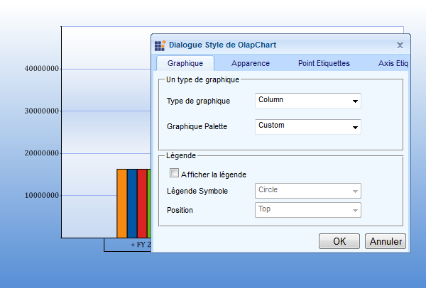

Localization is a key feature that targets its global usage. OlapDataManager can be set to the specific locale and the OlapChart can be rendered with the localized string on control based on the culture set on the OlapDataManager.
OLAP Base allows overriding default format strings of OlapCube with the culture based format string. This can be done by setting the “OverrideDefaultFormatStrings” property to true.
Use Case Scenarios
Localization helps the user to create an application that targets several cultures.

Figure 48 Localized OlapChart
Sample Link
A sample is available at the following location:
..\Syncfusion\EssentialStudio\<VersionNumber>\BI\Web\OlapChart.Web\Samples\3.5\OlapChart\Localization\Localization Demo
4.7.1 Adding Localization to an Application
Localization can be achieved by following the steps given below:
1. OlapChart localization is fully based on the resource (.resx) file generation. Prepare a translated version of the strings tabulated below and update it in the resource (.resx) file.
|
Localization Key |
Strings to be localized |
|
Appearance |
Appearance |
|
AxisLabels |
Axis Labels |
|
BackColor |
Back Color |
|
BackgroundStyle |
Background Style |
|
Cancel |
Cancel |
|
Chart |
Chart |
|
ChartPalette |
Chart Palette |
|
ChartStyle |
Chart Style |
|
ChartSymbol |
Chart Symbol |
|
ChartType |
Chart Type |
|
DataPointValue |
Data-Point Value |
|
ExpanderVisibility |
Expander Visibility |
|
False |
False |
|
FontColor |
Font Color |
|
FontFamily |
Font Family |
|
FontStyle |
Font Style |
|
ForeColor |
Fore Color |
|
GradientStyle |
Gradient Style |
|
InteriorStyle |
Interior Style |
|
Legend |
Legend |
|
LegendSymbol |
Legend Symbol |
|
OK |
OK |
|
OlapChartStyleDialog |
OlapChart Style Dialog |
|
PointLabels |
Point Labels |
|
Position |
Position |
|
ShowLegend |
Show Legend |
|
SymbolVisibility |
Symbol Visibility |
|
True |
True |
|
XAxis |
X-Axis |
|
YAxis |
Y-Axis |
5. Name the resource file as “OlapChart.<locale string representation>.resx”. For example, French culture can be written as “OlapChart.fr-FR.resx” and place the resource file in the “App_GlobalResources” folder of the web site.
6. Change the culture setting of the web page through OlapDataManger by using the following code:
|
[CS] var olapDataManager = new OlapDataManager(connectionString); olapDataManager.Culture = new System.Globalization.CultureInfo("fr-FR"); olapDataManager.OverrideDefaultFormatStrings = true; this.OlapChart1.OlapDataManager = olapDataManager; this.OlapChart1.DataBind(); |
|
[VB] Dim olapDataManager = New OlapDataManager(connectionString) olapDataManager.Culture = New System.Globalization.CultureInfo("fr-FR") olapDataManager.OverrideDefaultFormatStrings = True Me.OlapChart1.OlapDataManager = olapDataManager Me.OlapChart1.DataBind() |